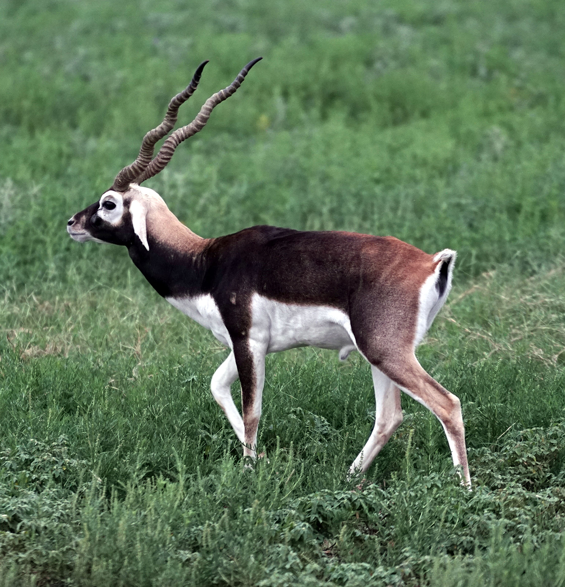

The Bengal tiger is a specific population of Panthera tigris subspecies. It has been threatened by poaching and loss of habitation. There are estimated to be about 58 wild individuals.
The Bengal tiger is a carnivore. It hunts on barasingha, water buffalo, nilgai, serow, wild boar, hogdear and much more.
Conservation status - Endangered

The blackbuck is a popupation of antelope scientificaly called the Antilope cervicapra .It has been threatened due to hunting, deforestation, climate change and much more.
The blackbuck's diet consists of mainly grasses. As summer comes, the blackbuck eats more browse. Pods, fruits, and flowers also supply to the blackbuck's diet.
Conservation status - Least concerned
The Bonnet macque, also known a zati ,is a species of macaque endemic. The main reason bonnet macaques are endangered is due to humam-animal conflict but a few other reasons they are endangered are: they are hunted, and live macaques are also traded for research.
The bonnet macaques diet consists of fruits, nuts, seeds, flowers, invertebrates, and cereals.
Conservation status - vulnerable